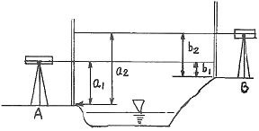
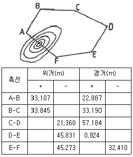

지적기사 (2007-08-05 기출문제)
1과목: 지적측량
1. 지적도의 제도방법으로 잘못된 것은?
- 도면의 윗 방향은 항상 북쪽이 되어야 한다.
- 경계선을 말소할 때에는 붉은색의 짧은 교차선을 약 3cm 간격으로 제도한다.
- 말소된 경계를 다시 등록하는 경우에는 말소된 짧은 교차선에 두 줄이 짧은 평행선을 그려 제도한다.
- 경계선은 경계점과 경계점 사이를 직선으로 연결한다.
(정답률: 알수없음)

2. 지적도근측량에서 연결오차의 허용범위에 대한 설명으로 잘못된 것은? (단, n은 측선의 수평거리의 총 합을 100으로 나눈 수)
- 1등도선은 당해 지역 축척분모의 1/100√n cm 이하
- 2등도선은 당해 지역 축척분모의 1.5/100√n cm 이하
- 경계점좌표등록부를 비치하는 지역의 축척분모는 500으로 한다.
- 하나의 도선에 속하여 있는 지역의 축척이 2 이상인 때에는 소축척의 축척분모에 의한다.
(정답률: 알수없음)
3. 평면직각좌표상의 점A(X1, Y1)에서 점 B(X2, Y2)를 지나고 방위각이 α인 직선에 내린 수선의 길이(E)는?
- E=(Y2-Y1)sin α-(X2-X1) cos α
- E=(Y2-Y1)sin α-(X2-X1) sin α
- E=(Y2-Y1)cos α-(X2-X1) cos α
- E=(Y2-Y1)cos α-(X2-X1) sin α
(정답률: 알수없음)
4. 지적도근측량에서 거리측정의 오차가 100m에 ±3mm라 하면 이것과 같은 정확도를 갖기 위한 측각오차의 최대 범위는?
- ±8초 이내
- ±6초 이내
- ±4초 이내
- ±3초 이내
(정답률: 알수없음)
5. 오차의 성질에 대한 설명 중 옳지 않은 것은?
- 숙련된 지적측량기술자도 착오는 일으킨다.
- 우연오차는 확률법칙에 따라 전파된다.
- 정오차는 측정회수를 거듭할수록 누적된다.
- 값이 큰 오차일수록 발생확률도 높다.
(정답률: 알수없음)
6. 1/500 축척에서 실제면적이 1598m2일 때 도상면적은?
- 40cm2
- 54cm2
- 64cm2
- 100cm2
(정답률: 알수없음)
7. 지적삼각측량을 할 때 삼각형의 각 내각은 얼마를 기준으로 하는가?
- 50°~150°
- 30°~120°
- 40°~100°
- 20°~90°
(정답률: 알수없음)
8. 각도측정에서 50m의 거리에 1‘ 의 각도 오차가 있을 때 실제의 위치 오차는?
- 2.40cm
- 0.02cm
- 1.00cm
- 1.45cm
(정답률: 알수없음)
9. 다음 중 지번 및 지목의 제도에 대한 설명으로 옳지 않은 것은?
- 지번 및 지목은 경계에 닿지 않도록 필지의 중앙에 제도한다.
- 지번 및 지목을 제도할 때에 디번 다음에 지목을 제도한다.
- 지번 및 지목을 제도할 때에 고딕체로 0.5~1밀리미터의 크기도 제도한다.
- 지번 및 지목을 제도할 때에 지번의 글자간격은 글자크기의 1/4 정도로 제도한다.
(정답률: 알수없음)
10. 전자면적측정기에 의한 도상 면적측정에서 2회 측정 교차에 대한 평균치를 측정면적으로 사용할 수 있는 허용면적 산출식으로 올바른 것은? (단, F : 원면적, M : 축척분모, A : 허용면적)
- 0.0232ㆍ√F
- 0.0262ㆍ√F
- F/A
- 0.0232ㆍMㆍ√F
(정답률: 알수없음)
11. 경위의측량방법에 의한 세부측량방법으로 옳게 짝지어진 것은?
- 지거법-도선법
- 도선법-방사법
- 방사법-교회법
- 교회법-지거법
(정답률: 알수없음)
12. 고초원점의 평면직각종횡선 수치로 옳은 것은?
- X=0m, Y=0m
- X=10.000m, Y=30.000m
- X=250,000m, Y=100,0000m
- X=500,000m, Y=200,000m
(정답률: 알수없음)
13. 지적삼각보조측량을 경위의측량방법과 다각망 도선법으로 실시할 때 점간거리의 총 합계가 3664.26m인 도선에 대한 연결오차의 허용한계는?
- 0.12m 이하
- 0.15m 이하
- 0.18m 이하
- 0.21m 이하
(정답률: 알수없음)
14. 지적삼각점표지의 점간거리는 평균 얼마를 기준으로 하는가?
- 50m~300m
- 1km~3km
- 2km~5km
- 30km~50km
(정답률: 알수없음)
15. 경위의측량방법으로 세부측량을 하는 경우 연직각을 정반으로 관측한 교차의 제한 기준은?
- 5분 이내
- 4분 이내
- 2분 이내
- 1분 이내
(정답률: 알수없음)
16. 지적삼각보조측량을 다각망도선법에 의하여 실시할 경우 1도선의 점의 수는 기지점과 교점을 포함하여 몇 점 이하를 기준으로 하는가?
- 5점
- 10점
- 15점
- 20점
(정답률: 알수없음)
17. 표준치보다 0.065m가 짧은 50m 짜리 줄자로 거리를 측정하여 150m를 얻었을 때의 실제길이는?
- 149.8⑤m
- 149.935m
- 150.065m
- 150.195m
(정답률: 알수없음)
18. 지적삼각점 설치를 위한 망구성으로 사용되지 않는 것은?
- 삽입망
- 교회망
- 사각망
- 삼각망
(정답률: 알수없음)
19. 경계점좌표등록부를 비치하는 지역에서 필지경계를 측정하는 방법이 아닌 것은?
- 지거법
- 교회법
- 방사법
- 도선법
(정답률: 알수없음)
20. 종선좌표(X)-454,600.37m, 횡선좌표(Y)=192,033.25m인 지적도근점을 포용하는 축척 600분의 1 지적도 좌측하단부의 도곽선 수치는?
- X=454,400m, Y=191,750m
- X=454,400m, Y=192,000m
- X=464,600m, Y=191,750m
- X=454,600m, Y=192,000m
(정답률: 알수없음)
2과목: 응용측량
21. 갱내에서 A점의 좌표 및 표고가 (1328.0, 810.0, 86.3), B점의 좌표 및 표고가 (1734.0, 589.0, 112.4)일 때 A, B점을 연결하는 갱도를 굴진할 경우 이 갱도의 경사거리는? (단, 좌표=(X, Y, Z)이고 단위는 m)
- 341.5m
- 363.1m
- 421.6m
- 463.0m
(정답률: 알수없음)
22. GPS 측량에서 이용하는 좌표계는?
- GRS-80
- ITRF2000
- JGD2000
- WGS-84
(정답률: 알수없음)
23. 노선측량의 완화곡선에서 클로소이드에 대한 설명으로 옳지 않은 것은?
- 클로소이드는 곡률이 곡선의 길이에 비례한다.
- 모든 클로소이드는 닮은 꼴이다.
- 철도의 종단곡선 설치에 가장 효과적이다.
- 클로소이드의 요소에는 길이의 단위를 갖는 것과 단위가 없는 것이 있다.
(정답률: 알수없음)
24. 우리나라 지형도 1/50000에서 조곡선의 간격은?
- 2.5m
- 5m
- 10m
- 20m
(정답률: 알수없음)
25. 지형을 표시하는 방법으로 적당하지 않은 것은?
- 음영법
- 영선법
- 등고선법
- 조감도법
(정답률: 알수없음)
26. 종중복도 60%, 횡중복도 30% 일 때 촬영 종기선의 길이와 촬영 횡기선의 길이의 비는?
- 6:3
- 2:1
- 3:1
- 4:7
(정답률: 알수없음)
27. 교호수준 측량에서 측정값이 아래와 같을 때 A, B 두 점 사이의 고저차는? (단, a1=2.52m, b1=1.21m, a2=3.53m, b2=2.20m)

- 1.31m
- 1.32m
- 1.33m
- 1.34m
(정답률: 알수없음)
28. 수준 측량시 중간시가 많은 경우 가장 편리한 야장 기입 방법은?
- 기준면식
- 기고식
- 승강식
- 고차식
(정답률: 알수없음)
29. 곡선설치에서 캔트(cant)의 의미는?
- 편경사
- 확폭
- 종곡선
- 매개변수
(정답률: 알수없음)
30. 지성선 중에서 빗물이 이것을 따라 좌우로 흐르게 되는 선으로 지표면이 높은 곳의 꼭대기 점을 연결한 선은?
- 합수선(계곡선)
- 분수선(능선)
- 경사변환선
- 최대경사선
(정답률: 알수없음)
31. 단곡선에서 반경(R)=200m이고 외할(E)이 15m일 때 교각(I)은?
- 41° 23‘14“
- 43° 03‘ 28“
- 45° 37‘ 36“
- 21° 31‘ 44“
(정답률: 알수없음)
32. GPS 위성의 신호인 L1과 L2는 두 개의 PRNs(Pseudo-Random Noise codes)에 의해 변조된다. 이 코드의 명칭은?
- f0 코드, f1 코드
- Ψ코드, △코드
- P코드, C/A코드
- IDOT코드, IODE코드
(정답률: 알수없음)
33. 사진측량의 트기성이라 할 수 없는 것은?
- 정량적, 정성적 관측이 가능함
- 정확도의 균일성이 좋음
- 분업화에 의한 능률성이 좋음
- 기상조건의 영향을 받지 않음
(정답률: 알수없음)
34. 초점거리 15cm의 카메라로 촬영한 사진상에서 철탑의 길이 4.8mm, 주점에서 철탑꼭지까지의 거리 20cm를 측정하였다. 실제 철탑의 높이가 36m이라면 사진의 축척은?
- 1/5000
- 1/6000
- 1/10000
- 1/20000
(정답률: 알수없음)
35. 그림과 같이 산에 터널을 뚫기 위하여 다각측량을 실시한 결과가 표와 같을 때 직선 AF의 거리는?

- 93.499m
- 100.257m
- 123.526m
- 293.706m
(정답률: 알수없음)
36. 수준기의 감도가 30“인 레벨(Level)을 사용하여 50m 떨어진 표척을 시준할 때 시준값의 차이는 얼마나 발생하는가?
- ±0.5mm
- ±1.3mm
- ±7.3mm
- ±10.5mm
(정답률: 알수없음)
37. 다음의 상호표정인자 중 회전인자에 해당하지 않는 것은?
- by
- k
- ø
- ω
(정답률: 알수없음)
38. 사진에 수직인 선과 중심점에서 연직인 선 사이의 각을 2등분하여 만나선 선이 사진상에는 일개의 점으로 나타난다. 이 점을 무엇이라고 하는가?
- 연직점(nadir point)
- 주점(principal point)
- 등각점(iso-center)
- 소실점(vanishing point)
(정답률: 알수없음)
39. 다음 중 대지표정과정에서 직접 수행되는 것은?
- 화면거리의 조정
- 투영중심의 일치
- 사진모델의 방위 결정
- 표정점의 좌표결정
(정답률: 알수없음)
40. 편각법으로 원곡선을 설치할 때 기점으로부터 교점까지의 거리=123.45m, 교각(I)=40° 20', 곡선반경(R)=100m일 때 시단현의 길이는? (단, 중심말뚝의 간격은 20m이다.)
- 13.28m
- 15.28m
- 6.72m
- 9.72m
(정답률: 알수없음)
3과목: 토지정보체계론
41. 다음 내용 중 토지정보시스템에 대한 설명으로 가장 거리가 먼 것은?
- 토지에 관한 제반 정보를 전산화하여 효율적으로 관리하는데 목적이 있다.
- 필지를 단위로 지적공부를 전산화한 시스템이다.
- 토지개발에 따른 환경영향을 평가하는 시스템이다.
- 합리적인 토지정책 수립과 토지업무의 효율화에 기여하는 시스템이다.
(정답률: 알수없음)
42. 다음 중 위상자료구조를 만드는 과정에 해당하는 것은?
- 디지타이징
- 스캐닝
- 정위치편집
- 구조화편집
(정답률: 알수없음)
43. 디지타이징 입력에 의한 도면의 오류를 수정하는 방법으로 틀린 것은?
- Undershoot and Overshoot: 두 선이 목표지점을 벗어나거나 못 미치는 오류를 수정하기 위해서는 선분의 길이를 늘려주거나 줄여야 한다.
- 라벨오류:잘못된 라벨을 선택하여 수정하거나 제 위치에 옮겨주면 된다.
- Sliver 폴리곤:폴리곤이 겹치지 않게 적절하게 위치를 이동시킴으로서 부정확하게 입력된 선분을 만든 버틱스들을 제거함으로써 수정될 수도 있다.
- 선의 중복:중복된 두 선을 제거함으로써 쉽게 오류를 수정할 수 있다.
(정답률: 알수없음)
44. 래스터 데이터의 일반적인 자료압축방법이 아닌 것은?
- Chain Code
- Block Code
- Structure Code
- Run-Length Code
(정답률: 알수없음)
45. 다음 중 벡터자료에 해당하는 것은?
- BMP
- JPG
- DXF
- GIF
(정답률: 알수없음)
46. 다음 중 토지정보시스템의 도형자료 입력에 주로 사용하는 방식이 아닌 것은?
- 레이아웃(layout) 방식
- 스캐팅(scanning) 방식
- COGO(Coordinate geometry) 방식
- 디지타이징(digitizing) 방식
(정답률: 알수없음)
47. 토지기록전산화의 목적으로 볼 수 없는 것은?
- 지적공부의 전산화 및 전산파일 유지로 지적서고의 폐지
- 체계적이고 과학적인 지적사무와 지적행정의 실현
- 최신의 자료확보로 지적통계와 주민정보의 정확성 제고 및 온라인에 의한 신속성 확보
- 전국적인 등본, 열람이 가능하게 하여 민원인의 편의 증진
(정답률: 알수없음)
48. 토지정보체계의 필요성으로 가장 적절한 것은?
- 도시의 교통문제 해결
- 인적관리 행정의 간편화 및 공개화
- 체계적인 도면 관리로 업무의 효율화와 신속 처리
- 토지ㆍ부동산 정보관리체계 및 다목적 지적정보체계 구축
(정답률: 알수없음)
49. 다음 중 벡터자료의 공간객체로 가장 거리가 먼 것은?
- 점(point)
- 선(line)
- 면(area)
- 격자(grid)
(정답률: 알수없음)
50. 데이터베이스에서 속성자료의 형태에 대한 설명으로 틀린 것은?
- 통계자료, 보고서, 관측자료, 범례 등의 형태로 구성되어 있다.
- 선 또는 다각형과 입체의 형태로 표현되는 자료이다.
- 법규집, 일반보고서 등의 자료를 말한다.
- 글자, 숫자, 기호, 색상 등으로 구성되어 있다.
(정답률: 알수없음)
51. 다음 자료들 중에서 지형, 지세 등 표면표현 및 등고선, 3차원 표현 등 표면모델링에 이용되는 것은?
- Coverage
- Layer
- TIN
- lmage
(정답률: 알수없음)
52. 다음 중 지적도면을 전산화함에 있어 정비하여야 할 사항과 거리가 먼 것은?
- 도면번호 정비
- 도곽선 정비
- 소유자 정비
- 경계 정비
(정답률: 알수없음)
53. 다음 중 관계형데이터베이스에서 자료의 추출(검색)에 사용되는 언어는?
- SQL
- Visual Basic
- Visual C++
- COBOL
(정답률: 알수없음)
54. 필지중심토지정보시스템의 구성체계 중, 지적측량업무를 지원하는 시스템으로서 지적측량업무의 자동화를 통하여 생산성과 정확성을 높여주는 시스템은?
- 지적행정시스템
- 지적공부관리시스템
- 지적측량시스템
- 지적측량성과작성시스템
(정답률: 알수없음)
55. 벡터자료에 대한 설명으로 틀린 것은?
- 그래픽의 정확도가 높다.
- 위치와 속성의 검색, 갱신, 일반화가 가능하다.
- 래스터자료보다 자료구조가 단순하다.
- 현상적 자료구조를 잘 표현할 수 있고 축약되어 있다.
(정답률: 알수없음)
56. 스캐닝 방식에 의한 공간데이터 취득의 장점에 해당하지 않는 것은?
- 손상된 도면을 입력하기에 적합하다.
- 작업자의 숙련 정도에 디지타이징보다 큰 영향을 받지 않는다.
- 복잡한 도면을 입력할 경우에는 작업시간이 단축된다.
- 지적도의 경계선 인식이 가능하다.
(정답률: 알수없음)
57. PBLIS 시스템과 가장 거리가 먼 것은?
- 건물관리 중심의 개발
- 사용자 편리성 및 정보의 정확성
- 객체지향 기법 적용
- 시군구행정종합시스템과의 연계 구현
(정답률: 알수없음)
58. 지적정보센터의 유지관리 등에 필요한 사항을 정하는 자는?
- 정보통신부장관
- 국토지리정보원장
- 대한지적공사장
- 행정자치부장관
(정답률: 알수없음)
59. 토지의 고유번호에 있어 행정구역코드의 변경절차로 맞는 것은?
- 소관청이 변경일 10일 전까지 직권정정 한다.
- 소관청이 행정자치부장관에게 변경일 10일 전까지 변경요청 하여야 한다.
- 소관청이 시ㆍ도지사에게 변경일 30일 전까지 변경요청 허여야 한다.
- 소관청이 시ㆍ도지사에게 변경일 60일 전까지 변경요청 하여야 한다.
(정답률: 알수없음)
60. 전산화 관련 자료의 구조중 하나의 조직 안에서 다수의 사용자들이 공통으로 사용할 수 있도록 통합 저장되어 있는 운영자료의 집합은 무엇인가?
- Database
- Geocode
- DMSS
- Expert System
(정답률: 알수없음)
4과목: 지적학
61. 토지의 물권 공시제도로서의 지적과 등기가 각각 분담하는 관계로서 옳지 않은 것은?
- 토지 등록단위 결정-지적
- 토지위치 결정-지적
- 제한물권 설정-등기
- 신규등록지의 소유자 조사-등기
(정답률: 알수없음)
62. 특별한 기준을 두지 않고 당사자의 신청순서에 따라 토지등록부를 편성하는 방법은?
- 물적 편성주의
- 인적 편성주의
- 연대적 편성주의
- 인정ㆍ물적 편성주의
(정답률: 알수없음)
63. 동일한 지번설정지역 내에서 최종 지번이 1075일 때 지번 545가 분할되어 1076, 1077로 표시되었다면 이러한 부번 방식은?
- 분수식 부번제도
- 자유 부번제도
- 사행식 부번제도
- 기번(岐番)부번제도
(정답률: 알수없음)
64. 지적도의 도곽선이 가지고 있는 역할로서 타당하지 않는 것은?
- 도곽신축 보정
- 도면 접합
- 방위
- 면적 통계
(정답률: 알수없음)
65. 토렌스 시스템의 기본원리 중 “토지권리증서의 등록은 토지의 거래사실을 이론의 여지없이 완벽하게 반영한다.”라는 원리는?
- 정확성 이론
- 커튼 이론
- 보험 이론
- 거울 이론
(정답률: 알수없음)
66. 간주 지적도의 설명 중 옳은 것은?
- 지적도로서 임야도로 간주하는 지적도
- 임야도로서 지적도로 간주하는 임야도
- 임야도로서 임야약도로 간주하는 임야도
- 임야도로서 지적약도로 간주하는 지적도
(정답률: 알수없음)
67. 토지의 사정(査定)을 사장 잘 설명한 것은?
- 토지의 소유자와 지목을 확정하는 것이다.
- 토지의 소유자와 강계를 확정하는 행정처분이다.
- 토지의 소유자와 강계를 확정하는 사법처분이다.
- 경계와 지적을 확정하는 행정처분이다.
(정답률: 알수없음)
68. 입안제도(立案制度)에 관한 설명으로 틀린 것은?
- 조선시대의 토지거래 공증제도
- 토지 매매에 대한 중개인의 보증제도
- 관의 토지거래 파악을 위한 제도
- 문기(文記)에 대한 확인 제도
(정답률: 알수없음)
69. 대한제국에서 양전사업을 담당하기 위한 최초의 독립기관은?
- 탁지부
- 임시토지조사국
- 양지아문
- 지계아문
(정답률: 알수없음)
70. 토지의 이익에 영향을 미치는 문서의 공정 등기를 보전하는 것을 주된 목적으로 하는 등록제도는?
- 날인증서 등록제도
- 권원 등록제도
- 소극적 등록제도
- 적극적 등록제도
(정답률: 알수없음)
71. 지적법상의 경계에 대한 올바른 설명은?
- 지상경계
- 도상경계
- 현실경계
- 점유경계
(정답률: 알수없음)
72. 지방토지조사위원회에 대한 설명으로 틀린 것은?
- 위원장 1인과 상임위원 5인으로 구성되었다.
- 토지사정의 잡문기관이다.
- 위원장은 조선총독부 정무총감이 맡았다.
- 각 도에 설치하였다.
(정답률: 알수없음)
73. 지적의 토지표시사항의 특성으로 볼 수 없는 것은?
- 정확성
- 다양성
- 통일성
- 검색성
(정답률: 알수없음)
74. 다음 중 현존하는 우리나라 지적자료 중 가장 오래된 것은?
- 신라장적
- 경자양안
- 광무양안
- 결수연명부
(정답률: 알수없음)
75. 우리나라의 현행 지번 설정에 대한 원칙 중 옳지 않은 것은?
- 북서기번의 원칙
- 아라비아숫자 지번의 원칙
- 부번(副番)의 원칙
- 종서(從書)의 원칙
(정답률: 알수없음)
76. 우리나라 지적제도와 등기제도에 대한 설명 중 옳지 않은 것은?
- 지적과 등기 모두 형식주의를 원칙으로 한다.
- 지적은 권리객체, 등기는 권리주체를 다룬다.
- 지적과 등기 모두 실질적 심사주의를 원칙으로 한다.
- 지적은 단독신청, 등기는 공동신청주의를 등록방법으로 한다.
(정답률: 알수없음)
77. 우리나라 지적제도사(地籍制度史) 중 토지대장을 양전도장(量田都帳)이라 명칭하였던 시대는?
- 고구려시대
- 백제시대
- 신라시대
- 고려시대
(정답률: 알수없음)
78. 경계불가분의 원칙이 의미하는 것은?
- 토지조사 당시의 경계선은 말소가 불가능하다.
- 먼저 착묵한 선을 그 경계선으로 한다.
- 경계선은 면적이 큰 것을 위주로 한다.
- 인접지와의 경계선은 공통으로 한다.
(정답률: 알수없음)
79. 지적의 발생설을 토지측량과 밀접하게 관련지어 이해할 수 있는 이론은?
- 과세설
- 치수설
- 지배설
- 역사설
(정답률: 알수없음)
80. 가계(家契)에 대한 설명으로 틀린 것은?
- 입안과 동일한 형식이나 입안보다 근대화된 것이다.
- 가계는 현재의 토지대장이라 할 수 있다.
- 가계는 가옥의 소유에 대한 관(官)의 인증서류이다.
- 1893년 한성부에서 처음으로 발급되었다.
(정답률: 알수없음)
5과목: 지적관계법규
81. 다음 중 잡종지로 지목을 설정할 수 없는 것은?
- 야외시장
- 영구적 건축물인 자동차운전학원의 부지
- 돌을 캐내는 곳
- 원상회복을 조건으로 흙을 파내는 곳으로 허가된 토지
(정답률: 알수없음)
82. 소관청이 토지의 이동을 직권으로 조사ㆍ측량하여 토지의 지번ㆍ지목ㆍ면적ㆍ경계 또는 좌표를 결정하고자 하는 때에는 토지이동현황조사계획을 수립하여야 한다. 이러한 토지이동현황조사계획에 대한 설명으로 옳은 것은?
- 시ㆍ도별로 수립한다.
- 대한지적공사의 지사별로 수립한다.
- 시ㆍ군ㆍ구별로 수립한다.
- 측량수행자가 수립하여 소관청에 보고한다.
(정답률: 알수없음)
83. 국토의 계획 및 이용에 관한 법률에 의해 녹지지역에 대하여 도시관리계획결정으로 세분하여 지정할 수 있는 지역으로 틀린 것은?
- 보전녹지지역
- 자연녹지지역
- 일반녹지지역
- 생산녹지지역
(정답률: 알수없음)
84. 국토의 계획 및 이용에 관한 법률에 정의된 도시관리계획에 대한 설명으로 틀린 것은?
- 건설교통부장관이 입안한 도시관리계획은 건설교통부장관이 결정한다.
- 건설교통부장관이 도시관리계획을 결정하고자 하는 때에는 중앙도시계획위원회의 심의를 거쳐야 한다.
- 도시관리계획결정은 규정에 의한 고시가 있은 날로부터 그 효력이 발생한다.
- 도시관리계획결정의 고시일부터 2년이 되는 날까지 지형도면의 고시가 없는 경우 그 2년이 되는 날까지 지형도면의 고시가 없는 경우 그 2년이 되는 날의 다음날에 도시관리계획결정은 효력을 상실한다.
(정답률: 알수없음)
85. 지적법상 지적측량업자의 결격사유에 해당되지 않는 것은?
- 금치산자 또는 한정치산자
- 지적법의 규정에 의하여 지적측량업의 등록이 취소된 후 3년이 경과된 자
- 형의 집행유예선고를 받고 그 유예기간이 경과하지 아니한 자
- 임원중에 금치산자가 있는 법인
(정답률: 알수없음)
86. 소관청이 축척변경을 하고자 할 때에는 축척변경위원회의 의결을 거치기 전에 시행지역내 토지소유자 얼마 이상의 동의를 얻어야 하는지 그 기준으로 옳은 것은?
- 3분의 1이상
- 4분의 1이상
- 3분의 2이상
- 4분의 3이상
(정답률: 알수없음)
87. 중앙지적위원회 위원의 임기는? (단, 위원장 및 부위원장을 제외한 위원)
- 1년
- 2년
- 3년
- 4년
(정답률: 알수없음)
88. 다음 중 신청의무의 게으름으로 인한 과태료 부과대상이 아닌 것은?
- 신규등록 신청
- 등록전환 신청
- 지목변경 신청
- 토지합병 신청
(정답률: 알수없음)
89. 경계점좌표등록부의 등록사항이 아닌 것은?
- 토지소재와 지번
- 좌표
- 토지소유자 등록번호
- 부호 및 부호도
(정답률: 알수없음)
90. 미등기토지의 소유권보존등기를 신청할 수 있는 사람이 아닌 자는?
- 지적공부상의 소유자
- 관할 소관청
- 판결에 의하여 자기의 소유권을 증명하는 자
- 수용으로 인하여 소유권을 취득하였음을 증명하는 자
(정답률: 알수없음)
91. 현행 지적법상 지번부여방법에 대한 설명으로 틀린 것은?
- 지번은 북서에서 남동으로 순차적으로 부여한다.
- 분할의 경우 주거ㆍ사무실 등의 건축물이 있는 필지는 분할전의 지번을 우선하여 부여한다.
- 신규등록 및 등록전환의 경우에는 반드시 최종 본번의 다음 순번부터 지번을 부여한다.
- 도시개발사업 등이 준공되기 전에 사업시행자가 지번부여신청을 하는 때에는 행정자치부령이 정하는 바에 따라 지번을 부여할 수 있다.
(정답률: 알수없음)
92. 지적법에 의한 토지소유자가 하여야 하는 신청을 대위할 수 있는 자에 대한 설명으로 잘못된 것은?
- 학교용지, 도로, 철도용지, 하천, 제발, 구거, 유지, 수도용지 등의 지목으로 되는 토지의 경우에는 그 사업시행자
- 국가 또는 지방자치단체가 취득하는 토지의 경우에는 그 토지를 관리하는 국가기관 또는 지방자치단체의 장
- 주택법에 의한 공동주택의 부지의 경우에는 집합건물의 소유 및 관리에 관한 법률에 의한 관리인 (관리인이 없는 경우에는 공유자가 선림한 대표자) 또는 사업시행자
- 민법 제 404조의 규정에 의한 채무자
(정답률: 알수없음)
93. 다음 중 도시관리계획에 해당하는 것은?
- 기반시설의 설치ㆍ정비 또는 개량에 관한 계획
- 관할구역의 기본적인 공간구조와 장기발전방향을 제시하는 종합계획
- 광역계획권으로 지정하여 수립하는 계획
- 2 이상의 특별시ㆍ광역시ㆍ시 또는 군의 공간구조 및 기능을 상호 연계하는 계획
(정답률: 알수없음)
94. 소관청이 사유지내에 지적측량기준점표지를 설치한 경우 그 손실보상에 대한 재결기관은?
- 시ㆍ도지사
- 행정자치부 장관
- 중앙지적위원회
- 관할 토지수용위원회
(정답률: 알수없음)
95. 등기부의 기재사항에 관한 다음 기술 중 틀린 것은?
- 저당권의 변경등기는 을(乙)구란에 기재되어 있다.
- 소유권에 관계되는 환매권의 등기는 갑(甲)구란에 기재되어 있다.
- 지상권에 관계되는 등기명의인의 표시변경 등기는 갑(甲)구란에 기재되어 있다.
- 소유권 등기의 말소등기는 갑(甲)구란에 기재되어 있다.
(정답률: 알수없음)
96. 등기신청이 있을 경우 등기관이 실질적으로 조사할 수 있는 사항은?
- 소유권에 관한 사항
- 토지표시에 관한 사항
- 구분건물 표시에 관한 사항
- 부동산의 멸실에 관한 사항
(정답률: 알수없음)
97. 대지권등록부의 등록사항이 아닌 것은?
- 토지의 소재
- 대지권 비율
- 소유자의 성명
- 지목
(정답률: 알수없음)
98. 지적도의 축척으로 틀린 것은?
- 1000분의 1
- 3000분의 1
- 2600분의 1
- 6000분의 1
(정답률: 알수없음)
99. 소관청이 지적공부의 등록사항에 잘못이 있음을 발견한 때에 정정방법으로 옳은 것은?
- 소관청이 직권으로 조사ㆍ측량하여 정정
- 확정판결서에 정보에 의거 정정
- 토지소유자의 승낙서에 의거 정정
- 등기부등ㆍ초본에 의거 정정
(정답률: 알수없음)
100. 다음 중 지적법에 의한 등기촉탁 대상에 해당되지 않는 것은?
- 분할
- 합병
- 축척변경
- 신규등록
(정답률: 알수없음)